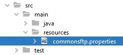

PSP - U5 Actividades FTP
- Para cada actividad, crea un proyecto nuevo con el nombre de la clase principal.
- Crea una/varias nuevas clases dentro del paquete psp.u5.actividades para cada ejercicio.
- Las clases deben tener el prefijo psp.u5.actividades.U5AXX_xxxxxxxx y darles un nombre identificativo de la funcionalidad que tienen en el diseño (por ejemplo psp.actividades.U5A10_FTPClient).
Es importante que las salidas, tanto de los programas cliente, como del servidor, indiquen claramente de donde viene la información que están mostrando.
1. Actividad U5A11 – Filezilla FTP Server
1.Instalar un servidor FTP (Filezilla Server)
En clase, tenemos un servidor FTP instalado y configurado con el acceso alumno/alumno, por lo que para el desarrollo de esta parte de la unidad lo podéis usar sin problema, aunque no estaría de más que realicéis una instalación en local para comprobar la funcionalidad de vuestras aplicaciones.
Sin embargo, en casa, será obligatorio instalar un servidor FTP para poder realizar pruebas y ver los resultados de la ejecución de vuestros programas.
Dentro del paquete XAMPP, tenemos disponible un Filezilla Server, pero no está en la versión portable de XAMPP que utilizáis, por lo que lo tenemos que instalar como un elemento aparte.
Para la instalación del servidor FTP Filezilla Server, podemos seguir los pasos de este tutorial
Cómo montar un servidor FTP en Windows con FileZilla
Además, podéis buscar un sin fin de vídeos en los que también se explica la instalación y configuración del servidor, aunque no todos lo hacen de forma correcta.
Es importante tener en cuenta la recomendación que os hace de que el servicio no se inicie automáticamente, para evitar tener programas corriendo en segundo plano y usando recursos del sistema cuando la mayor parte del tiempo no los vamos a estar usando. Esto aplica tanto al servidor como al interfaz de administración, que deberemos configurarla para que tampoco se inicie automáticamente.
- Configurar un usuario para las pruebas
Como viene siendo habitual en otras actividades, os pido que todos usemos el mismo usuario y contraseña para las aplicaciones, de forma que así las pruebas que realizo pueden automatizarse. En este caso, vamos a crea un usuario para acceder al servidor FTP
Usuario: alumnodam / Contraseña: psp
La parte de configuración de los directorios es la más “compleja” de entender. Tenéis que pensar que cada directorio que el usuario ve cuando se conecta al servidor FTP se corresponde con un directorio real de la máquina donde está el servidor. Por eso configuramos un Virtual path y un Native path, estableciendo la relación entre lo que ve y dónde está ubicado.
Por ejemplo, si configuramos:
| Virtual Path | Native path |
|---|---|
| / | C:/Users/Profesor/Documents/ |
| /servidores | C:/SERVIDORES |
| /www | C:/SERVIDORES/tomcat/webapps/ROOT |
Cuando el usuario acceda al FTP verá todas las carpetas que hay en Documents del usuario Profesor, y además verá una carpeta llamada servidores que le dará acceso a la carpeta SERVIDORES en la raíz del disco duro, y verá otra carpeta www que le dará acceso a la carpeta ROOT de tomcat.
El usuario, a través del servidor FTP, no podrá acceder a ninguna otra carpeta del sistema además de que, con la configuración de paths virtuales, no sabrá la ubicación real de los archivos en el sistema.
Es importante reseñar que para cada una de las carpetas se pueden configurar los permisos de acceso de que dispondrá el usuario cuando acceda por FTP.
No es necesario cambiar ningún otro parámetro de configuración del servidor, a no ser que tengamos problemas con el firewall de Windows o queramos poner un mensaje de bienvenida personalizado.
La instalación y configuración en entornos GNU/Linux y OSX es muy similar.
2. Actividad U5A12_FtpClient
Creación del proyecto
Este proyecto lo tienes que crear como Java with Maven > Java Application
- Crea una clase para probar la funcionalidad básica de un cliente de FTP en Java.
Para conectar con el servidor FTP y usar sus servicios, vamos a utilizar la librería Apache Commons Net.
Puedes consultar la referencia oficial de la librería y muchos ejemplos de como realizar determinadas funciones en las webs que te indico
Apache.org
CodeJava.net
Baeldung (Cuidado porque usa un FakeFTPServer en los ejemplos)
Para usar la librería podemos, o bien añadir el .jar descargado de Apache Commons en las librerías (/lib) de nuestro proyecto, o bien añadir la dependencia en el proyecto Maven
<!-- https://mvnrepository.com/artifact/commons-net/commons-net -->
<dependency>
<groupId>commons-net</groupId>
<artifactId>commons-net</artifactId>
<version>3.10.0</version>
</dependency>
Prueba a realizar las siguientes acciones (las acciones pueden estar hardcoded y ejecutarse de forma secuencial o bien pedir la acción y la información necesaria por consola):
- Listar archivos y directorios en el servidor (con y sin propiedades)
- Crear / eliminar directorios remotos
- Borrar / renombrar archivos remotos
- Moverte por los directorios en el servidor (workingDirectory)
- Descargar archivos del servidor (texto y binarios)
- Subir archivos al servidor (texto y binarios)
- Cualquier otra funcionalidad que consideres interesante
3. Actividad U5A13_TestFtp
Creación del proyecto
Este proyecto lo tienes que crear como Java with Maven > Java Application
- Crea una clase “componente” para probar la funcionalidad básica de un cliente FTP en Java.
Esta clase debe implementar al menos los siguientes métodos, aunque se puede ampliar con todos los métodos que necesites y/o creas convenientes (listar archivos remotos, renombrar, eliminar, etc.).
Esta es la estructura básica de la clase TestFTP. Además de los métodos indicados, puedes añadir otros que consideres necesarios para completar la funcionalidad y facilitar el uso de la clase. También puedes cambiar los tipos de datos de los parámetros según tus necesidades y el tipo de retorno de los métodos (por ejemplo, boolean para indicar éxito o fracaso).
Las propiedades con la configuración del servidor FTP deberán leerse de un archivo commonsftp.properties, con el contenido de las variables que se muestran a continuación.
# apache.commons.net.ftp.properties
# Data to connect to FTP server
ftp.server = servidor.psp
ftp.port=21
ftp.user=vicente
ftp.password=psp
ftp.localWorkingDirectory=”C:/ftp”
ftp.user=vicente
ftp.password=psp
ftp.localWorkingDirectory=”C:/ftp”
El archivo lo vamos a guardar en la carpeta src/main/resources del proyecto.

El acceso al archivo lo haremos de la siguiente forma:
InputStream input = this.getClass().getResourceAsStream("/" + propertiesFile)
En los apuntes tienes varios recursos para ver cómo trabajar con este tipo de archivos, que no deja de ser una subclase de HashMap.Ya lo hemos visto también en las actividades de correo electrónico.
La propiedad ftp.localWorkingDirectory nos permite establecer el directorio de trabajo inicial del cliente, del que se tomarán los archivos a enviar al servidor y donde se guardarán los archivos descargados del mismo.
- Crea la clase principal U5A13_TestMail
Crea una clase con un main que instancie un objeto de tipo TestFtp y realice las operaciones indicadas en el ejercicio anterior.
Ofrece un menú, en el main, que permita probar las diferentes opciones de la clase TestFtp.
Para las rutas de los archivos, es recomendable indicar rutas relativas al directorio de trabajo (local/remoto).
Funcionalidad de la clase U5A13_TestFTP
Ten en cuenta que esta clase debe permitir usar servicios de un servidor FTP de forma que la librería Apache Commons sea transparente para el desarrollador que la use.
Para ello, puedes añadir cuantas propiedades y métodos consideres necesarios a la clase TestFTP.
El código debe consistir básicamente en:
- Seleccionar la acción a realizar
- Pedir los datos necesarios para cada acción
- Llamar al método correspondiente de la clase TestMail para enviar el correo.
- Mostrar mensajes de éxito o error según corresponda.